- 아기돼지 삼형제는 집을 떠나 각각 다른 성격과 방법으로 집을 짓기로 결정합니다.
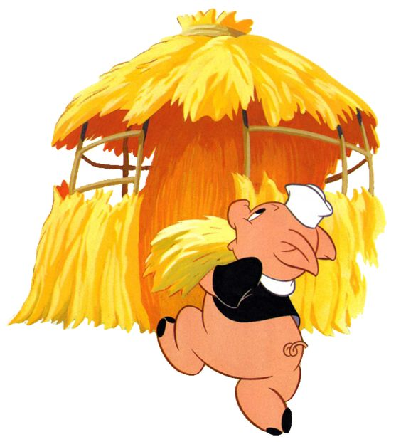 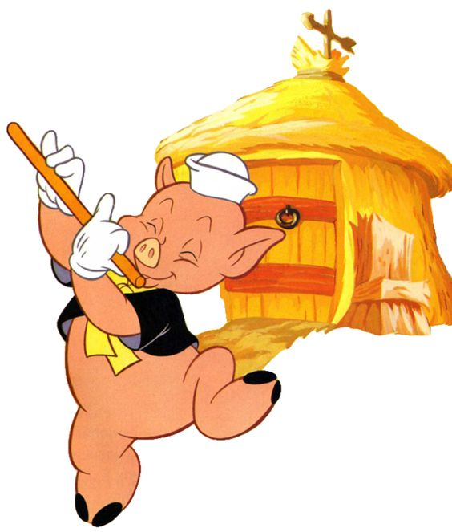
- 첫째 아기 돼지는 지푸라기로 집을 지어서 늑대가 집을 금방 부수게 됩니다.
- 첫째 아기돼지는 급히 둘째 아기돼지의 집으로 도망칩니다.
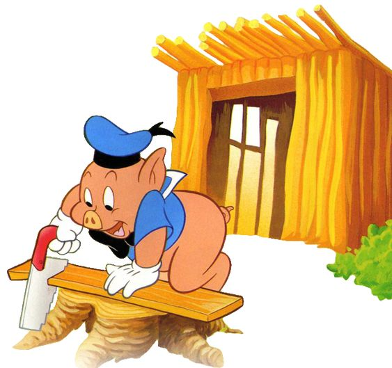 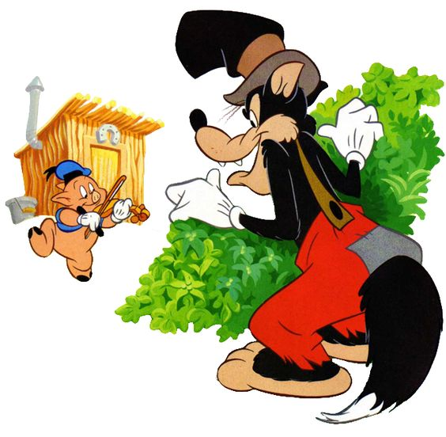
- 둘째 아기 돼지도 나무로 집을 지어서 역시 늑대가 바로 집을 부수게 되었습니다.
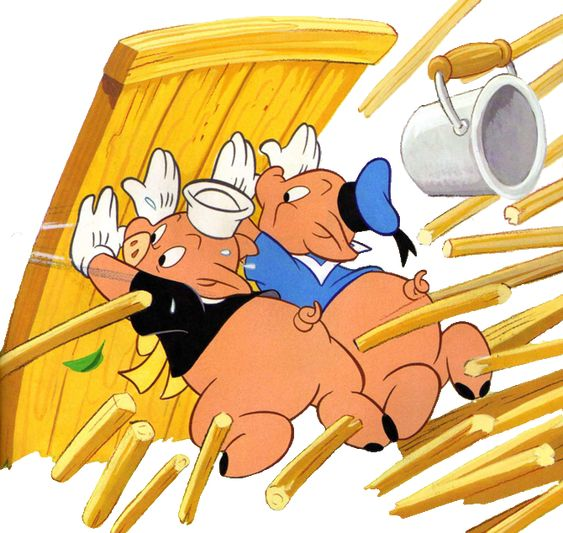
- 첫째, 둘째 아기돼지는 셋째 아기돼지의 벽돌 집으로 숨습니다.
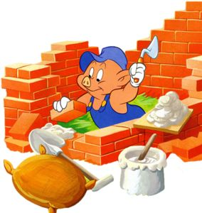

- 셋째 아기 돼지는 벽돌로 집을 튼튼하게 집을 지어서 늑대가 아기 돼지들을 해치지 못하게 되었습니다.
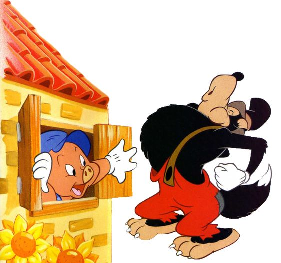 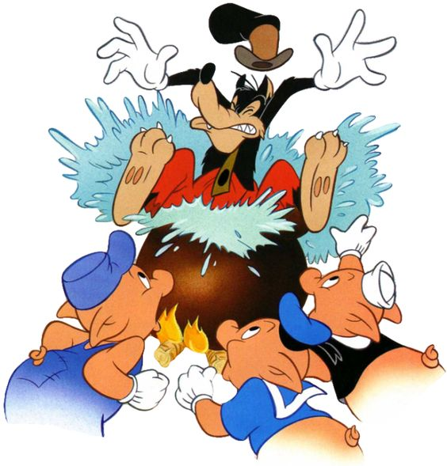
- 결국 늑대는 지치고 포기하게 되고, 세 아기돼지는 안전하게 지낼 수 있게 됩니다.
| 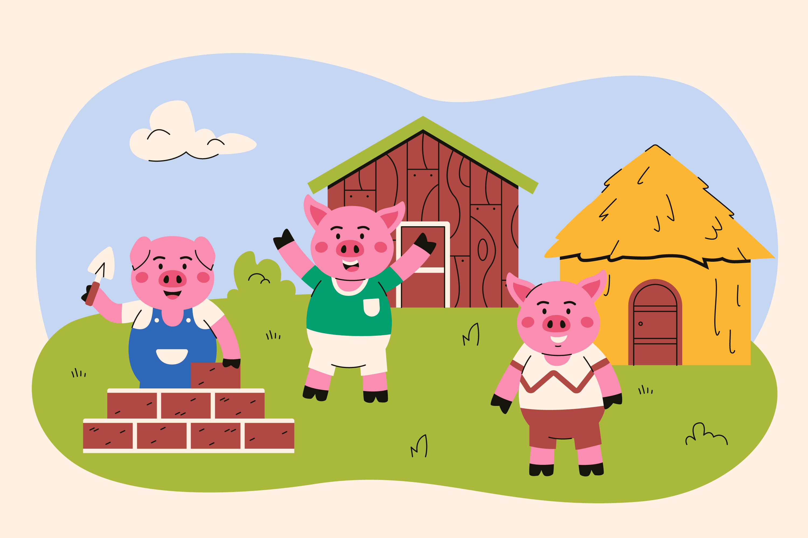 |
|---|
| - 이 이야기는 안전과 노력의 중요성을 강조하며, 각자의 방식으로 집을 짓는 것이 어떤 결과를 가져오는지를 보여줍니다. 셋째 아기돼지가 가장 잘 준비한 덕분에 결국 그들이 안전하다는 메시지가 담겨 있습니다. - Ames지역은 심각한 홍수를 몇 번 겪었고, 그 외에도 계속 작은 홍수가 자주 발생하는 곳이기 때문에 주민들의 안전과 재산 보호를 위해 홍수에 강한 주택 건설이 필수적이었을 것입니다. - 따라서 외장재의 트렌드가 어떻게 변해갔는지 알아보면 좋을 것 같아서 이 주제를 선택하게 되었습니다. |
- 경제: 기술 발전에 따른 비용 감소, 고효율성
- 디자인: 전통적/현대적 선호도 차이
- 기후: Ames 지역의 홍수 문제
| 순위 | 외장재 | Exterior_1st | Exterior_2nd |
|---|---|---|---|
| 1위🥇 | VinylSd | 1,026 | 1,015 |
| 2위🥈 | MetalSd | 450 | 447 |
| 3위🥉 | HdBoard | 442 | 406 |
| 4위 | Wd Sdng | 420 | 397 |
| 5위 | Plywood | 221 | 274 |
| 6위 | CemntBd | 126 | 126 |
❗CemntBd의 경우 Exterior_2nd는 CmentBd로 표기되었다.
🔎 Exterior_1st와 Exterior_2nd의 순위가 1~6까지 동일하기 때문에 Exterior_1st 자료로만 분석을 진행하기로 결정!
새로 지어진 동네의 경우 당시 유행한 건축 재료를 사용할 가능 성이 높을 것이다.
최근에 유행한 외장재의 건수가 많은 동네가 새로 지어진 동네일 것이다.
❗ 동네가 겹치는 부분이 있는 것으로 보아 데이터가 정확하지 않은 것 같다.
❗ 해당 자료는 Ames전체 건축수가 아닌, 2000년대 초반에 판매된 일부 집에 대한 자료이기 때문에 정확도에 한계가 있다.
🔎 특정 연도를 지도에 시각화 해보면 그 당시 어떤 동네가 생겼는지 확인 할 수 있지 않을까?
- 경제적 번영
- 2000년대 초반은 미국 전체적으로 경제가 비교적 안정적인 시기였다.
- 부동산 시장의 활기
- 미국 부동산 시장의 버블 형성과 함께 대출 기준이 매우 느슨해졌던 시기였다.
🔎 건축수가 가장 많은 2000년대를 집중 탐구해보기로 결정!

환경 친화적인 소재이며, 자연스러운 목재의 느낌이 고급스러운 분위기를 자아낸다.
여러 종류의 목재와 마감처리로 다양한 외관을 구현할 수 있다.
그러나 목재는 주기적인 페인트, 스테인 처리가 필요하며 습기와 해충에 취약할 수 있다.
금속 특성상 부식과 해충에 강하며, 극한의 날씨에서도 잘 견딘다.
녹슬지 않는 금속은 유지보수가 덜 필요하며, 오랜 기간동안 외관을 유지할 수 있다.
그러나 초기비용이 높고, 설치가 다소 복잡하다.
하드보드는 쉽게 절단, 가공할 수 있어 다양한 디자인에 맞출 수 있다.
다른 천연 목재에 비해 저렴한 편이다.
그러나 습기에 노출될 경우 팽창하거나 변형될 수 있어 주기적인 유지 보수가 필요하다.
결을 교차시켜 압착한 구조덕분에 강도와 내구성이 뛰어나고 뒤틀림이 적다.
천연 목재에 비해 저렴한 편이며, 재활용이 가능하여 환경 친화적이다.
절단, 드릴링 등 다양한 가공 작업에 용이하다.
그러나 습기에 노출되면 부풀거나 손상될 수 있어 방수처리가 필수적이다.

습기와 해충에 강해 오랜 시간 유지된다
쉽게 청소할 수 있으며, 페인트가 벗겨지거나 갈라질 염려가 거의 없다.
설치가 비교적 쉽고, 페인트가 벗겨질 염려가 없다.
그러나 외관상 인공적인 느낌으로 인해 선호도가 떨어진다.
📌 1960년대 VinylSd vs 2000년대 VinylSd 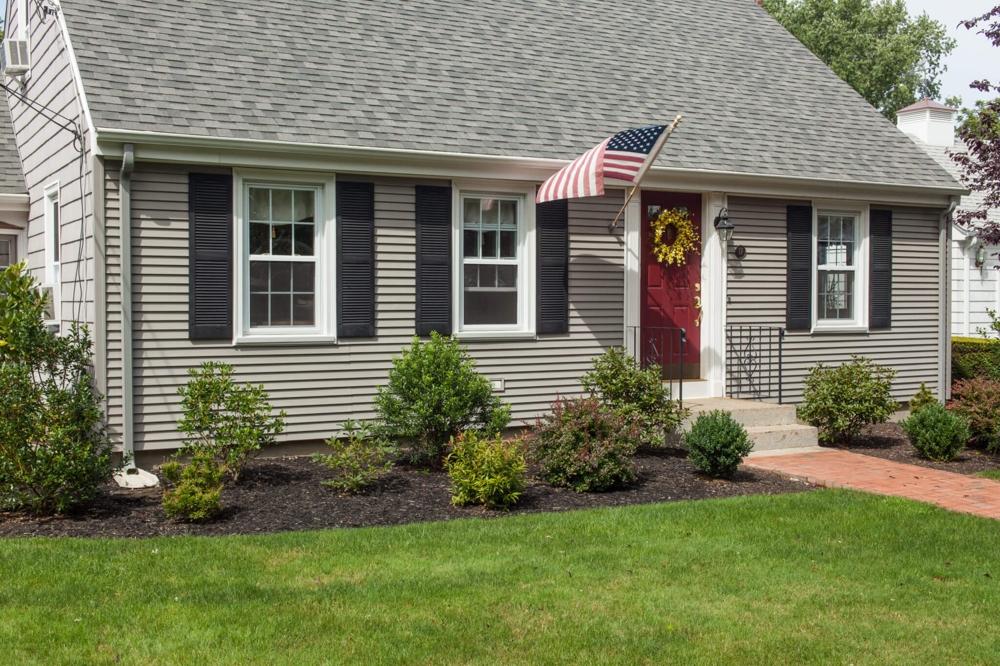
1950년 알루미늄 사이딩 대체재로서 미국에서 개발되었고, 이후 1960년대 주택 외장재 시장에 진출했다.
초기 VinylSd 출시 당시 내구성 문제와 색상 유지 문제로 인해 막강한 인기를 누리지 못했다.
그러나 1970년대 제조 기술의 발전으로 내구성, 색상 유지력, 설치 용이성이 크게 개선되었다.
주로 시멘트와 모래로 구성되어 있으며, 강화 섬유가 포함되지 않은 경우가 많다. 이로 인해 상대적으로 더 무겁고 단단한 특성을 가집니다.
페인트가 잘 벗겨지지 않으며, 유지보수 비용이 적게 든다.
그러나 시멘트 보드는 무거워 설치가 어려울 수 있고, 전문시공이 필요하다.
시멘트, 모래, 셀룰로스 섬유 및 기타 재료가 혼합되어 만들어진다. 섬유가 포함되어 있어 유연성과 내구성이 향상된다.
섬유 시멘트 보드는 시멘트 보드보다 더 우수한 유연성과 내구성, 습기 저항성을 제공한다.
가볍고 설치가 쉬우며, 유지 관리가 간편하다.
Total Built(🔺446)
780
🥇 VinylSd(🔺460)
645
🥈 CemntBd(🔺57)
64
🥉 MetalSd(🔺28)
59
HdBoard(🔻83)
3
| 동네이름 | 건물수 |
|---|---|
| College_Creek | 152 |
| Northridge_Heights | 126 |
| Somerset | 113 |
| Gilbert | 88 |
| Timberland | 39 |
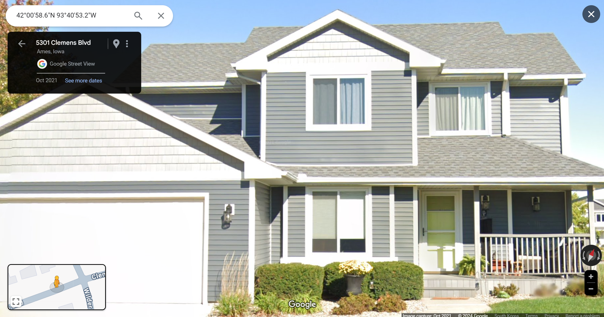
- 내구성과 유지 관리: 내후성이 뛰어나고 오랜 사용이 가능. 정기적인 교체 필요 없음, 폐기물 감소.
- 환경적 장점: 생산 과정에서 에너지 소비와 온실가스 배출이 상대적으로 적음.
: 재활용 가능, 환경적 영향 최소화. 유지 관리에 필요한 화학 물질 사용이 적어 환경에 미치는 영향을 줄임. - 비용 효율성: 단열 비닐 사이딩으로 에너지 효율성 향상. 난방 및 냉방 비용 절감.
- 주택 가치 향상: 잠재적 구매자에게 오랜 기간 유지할 수 있는 외장재로 인식. 보증이 새 소유자에게 양도 가능.
| 동네이름 | 건물수 |
|---|---|
| Somerset | 18 |
| Northridge_Heights | 15 |
| Crawford | 9 |
| Stone_Brook | 9 |
| College_Creek | 5 |
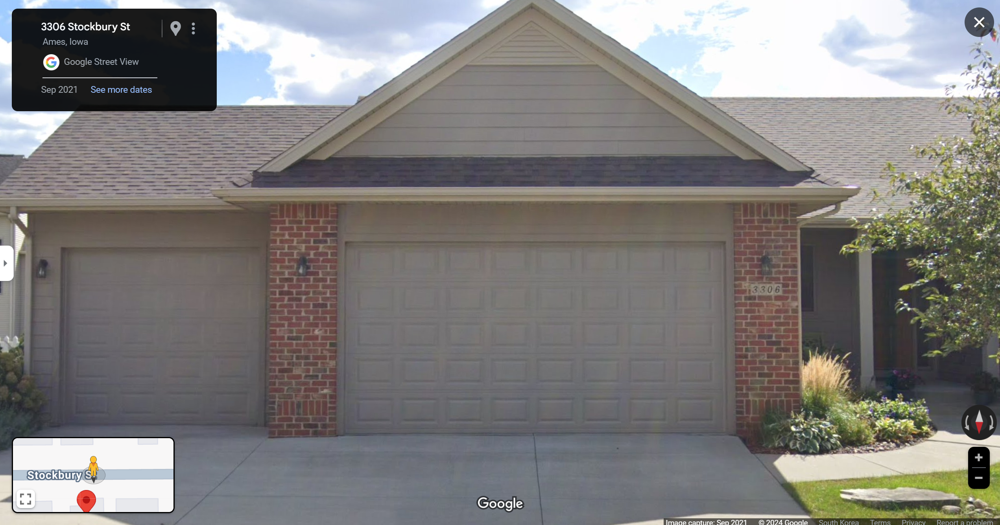
- 내구성과 유지 관리: 내후성이 뛰어나고 오랜 사용이 가능. 정기적인 교체 필요 없음, 폐기물 감소.
- 환경적 장점: 생산 과정에서 에너지 소비와 온실가스 배출이 상대적으로 적음.
: 재활용 가능, 환경적 영향 최소화. 유지 관리에 필요한 화학 물질 사용이 적어 환경에 미치는 영향을 줄임. - 비용 효율성: 단열 비닐 사이딩으로 에너지 효율성 향상. 난방 및 냉방 비용 절감.
- 주택 가치 향상: 잠재적 구매자에게 오랜 기간 유지할 수 있는 외장재로 인식. 보증이 새 소유자에게 양도 가능.
| 동네이름 | 건물수 |
|---|---|
| Somerset | 28 |
| Northridge_Heights | 24 |
| Stone_Brook | 4 |
| North_Ames | 2 |
| Timberland | 1 |

- 내구성과 유지 관리: 내후성이 뛰어나고 오랜 사용이 가능. 정기적인 교체 필요 없음, 폐기물 감소.
- 환경적 장점: 생산 과정에서 에너지 소비와 온실가스 배출이 상대적으로 적음.
: 재활용 가능, 환경적 영향 최소화. 유지 관리에 필요한 화학 물질 사용이 적어 환경에 미치는 영향을 줄임. - 비용 효율성: 단열 비닐 사이딩으로 에너지 효율성 향상. 난방 및 냉방 비용 절감.
- 주택 가치 향상: 잠재적 구매자에게 오랜 기간 유지할 수 있는 외장재로 인식. 보증이 새 소유자에게 양도 가능.
| 동네이름 | 건물수 |
|---|---|
| Edwards | 2 |
| College_Creek | 1 |
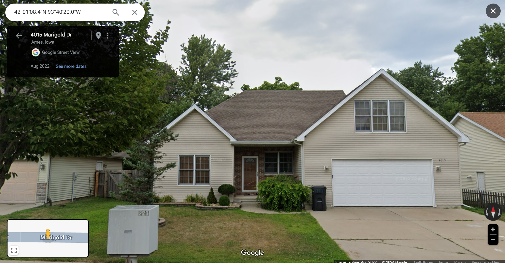
- 내구성과 유지 관리: 내후성이 뛰어나고 오랜 사용이 가능. 정기적인 교체 필요 없음, 폐기물 감소.
- 환경적 장점: 생산 과정에서 에너지 소비와 온실가스 배출이 상대적으로 적음.
: 재활용 가능, 환경적 영향 최소화. 유지 관리에 필요한 화학 물질 사용이 적어 환경에 미치는 영향을 줄임. - 비용 효율성: 단열 비닐 사이딩으로 에너지 효율성 향상. 난방 및 냉방 비용 절감.
- 주택 가치 향상: 잠재적 구매자에게 오랜 기간 유지할 수 있는 외장재로 인식. 보증이 새 소유자에게 양도 가능.
- 조사 대상: Ames 지역 주민들이 선호하는 외장재
- 목적: 인테리어 사업을 운영하는 회사에 도움을 제공하기 위함이다.
- 적용 가능성: 이 연구 결과는 Ames 지역뿐만 아니라 유사한 기후와 환경을 가진 다른 지역에서도 활용할 수 있다.
- 트렌드 인사이트: 소비자들의 외장재 선택 트렌드를 파악함으로써, 향후 시장 전망에 대한 통찰을 제공한다.
- 기후 변화: 지역의 기후 변화에 따라 외장재 선택이 달라지며, 자연재해에 효과적으로 대응할 수 있는 외장재의 중요성이 증가한다.
- 기술 발전: 새로운 기술의 도입으로 효율적이고 지속 가능한 외장재가 개발되고 있으며, 이러한 변화에 대한 이해는 필수적이다.
- 투자 가치: 외장재 선택은 건물의 전체적인 가치와 시장성을 결정짓는 중요한 요소로, 트렌드를 잘 분석하고 반영하는 것이 장기적인 투자 가치를 높이는 데 기여한다.
- 결론은 Ames 지역의 외장재 트랜드 변화를 분석함으로써 인테리어 및 건축 사업에 중요한 통찰을 제공하며, 기술 발전, 기후 변화, 경제적 요인 등이 외장재 선택에 중요한 영향을 미친다는 것입니다.
- 에임즈만을 바탕으로 한 데이터셋을 사용했기 때문에 미국의 모든 홍수 유의 지역에 일반화하기 어렵다.